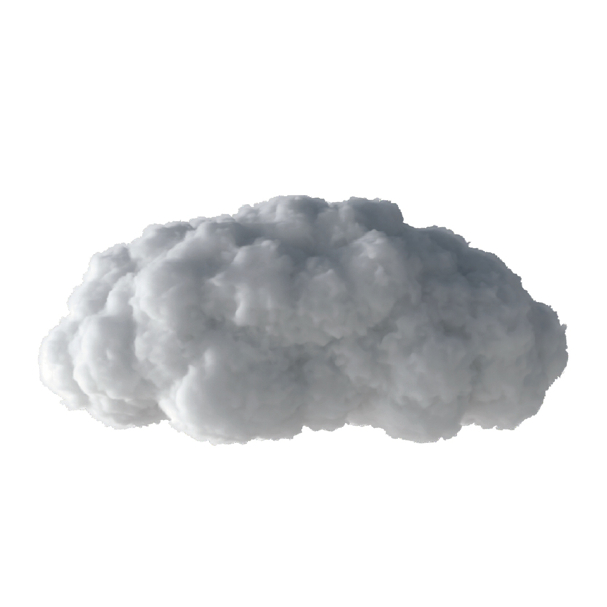

a contrario
If you walk through a life where
you can't just be happy,
There are
things that stand in my way with
scary power.
Things that spread
out of control the draft blowing
against the direction of progress,
Even in the midst of freezing all
the doors to the quagmire that
pulls down your ankles
-Everything bothers as planned.
But there is no life that is as sad
as it is.
Even the moments that
drove me and blocked me
It will
help me move forward again.
[Unbearable flames]
make it (free)
[Icy freeze]
makes it (harder)
[Fierce wind]
makes it go (unexpected)
[Sinking in a pit]
can be (poppin)
